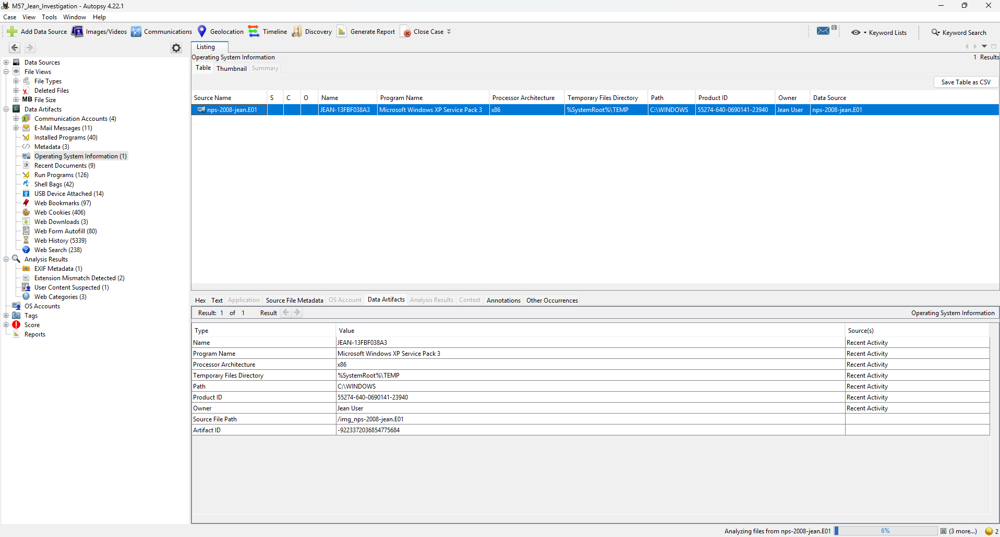
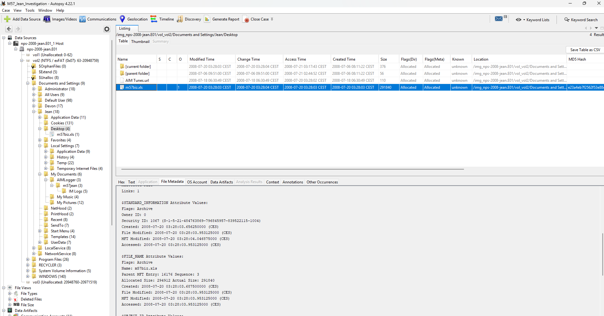
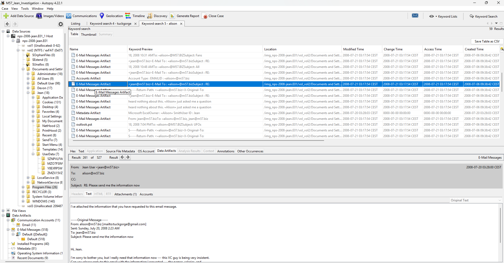
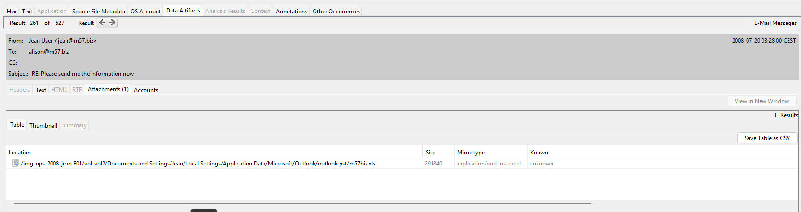
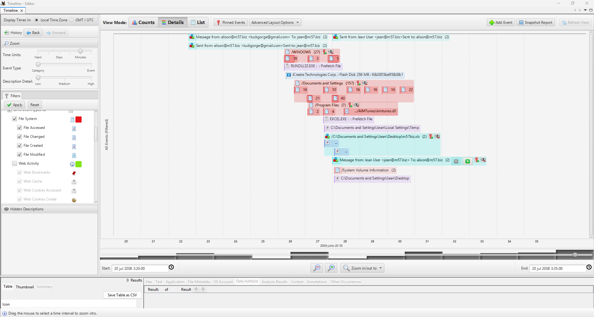
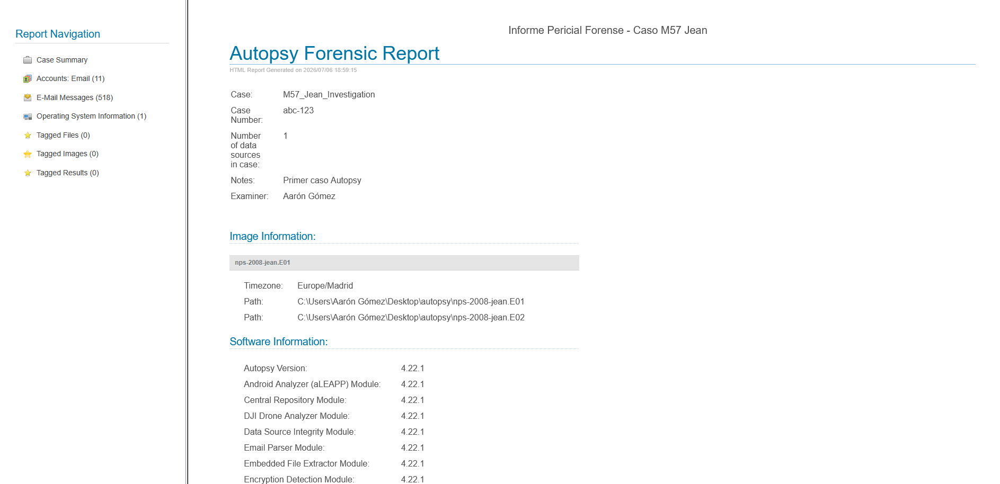

Guía de Análisis Forense: Caso Jean Jones (M57.biz)
Guía técnica y metodológica paso a paso para la investigación de la exfiltración de documentos confidenciales de la startup M57.biz utilizando la plataforma Autopsy 4.x.
Contexto del Caso: ¿Qué pasó en M57.biz?
M57.biz es una startup dedicada al catálogo de arte corporal. Pocas semanas después de su fundación, una hoja de cálculo confidencial con nombres, salarios y números de seguridad social (SSN) de todos los empleados apareció publicada en el foro de su principal competidor.
Jean Jones
CFO y propietaria del portátil. Envió el archivo creyendo que lo pedía la presidenta Alison, pero cometió la imprudencia de incluir a un tercero desconocido en la cadena.
Alison Smith
Presidenta de M57.biz. Niega haber pedido o recibido la hoja de cálculo por correo y desconoce el origen de la filtración.
tuckgorge
Identidad desconocida (externo). Correo: tuckgorge@gmail.com. Receptor final del archivo confidencial adjunto.
Fase 0: Procedimiento de Adquisición en un Caso Real
En este entorno de laboratorio trabajamos directamente con una imagen forense pre-adquirida (los segmentos E01 provistos por Digital Corpora). Sin embargo, en un escenario pericial real, es imperativo seguir rigurosamente los siguientes protocolos de adquisición física para garantizar la validez legal de las pruebas:
1. Aislamiento y Cadena de Custodia
Se debe proceder al aislamiento físico del equipo informático (en este caso, el portátil de Jean Jones) impidiendo cualquier conexión de red o manipulación no autorizada. Cada paso y persona que tenga contacto físico o lógico con el dispositivo debe registrarse minuciosamente en el documento oficial de cadena de custodia, etiquetando el hardware con identificadores únicos de precinto.
2. Bloqueo de Escritura (Write Blocking)
Bajo ninguna circunstancia se debe conectar el disco duro original directamente a una máquina de análisis sin protección. Se deben emplear bloqueadores de escritura por hardware (como dispositivos Tableau) o, en su defecto, bloqueadores por software a nivel de kernel. Esto impide que el sistema operativo de análisis escriba metadatos ocultos (como la fecha de último acceso) en el soporte original.
3. Duplicación Bit a Bit (Clonación)
Se realiza una copia exacta de todos los sectores físicos (incluyendo espacio no asignado, áreas holgadas y metadatos) utilizando herramientas periciales de clonación como dd, dcfldd, FTK Imager o duplicadoras físicas portátiles. El resultado suele exportarse en formato crudo (RAW/DD) o en formatos periciales estructurados como el E01 (Expert Witness Format), que comprime y segmenta los datos.
4. Verificación Criptográfica
Inmediatamente después de clonar el disco, se computa la huella digital criptográfica (usando funciones hash como SHA-256 o MD5) tanto del disco físico original como de la imagen forense resultante. Ambos hashes deben coincidir bit a bit para certificar la total integridad del volcado. A partir de este momento, todo análisis e ingesta en Autopsy se realiza exclusivamente sobre las imágenes clonadas, resguardando el disco original en un entorno protegido.
Preparación del Caso en Autopsy
Antes de comenzar el análisis, es necesario descargar la imagen forense del laptop y configurar el entorno de trabajo en Autopsy:
1 Descargar Imagen Forense
Accede a la URL base de Digital Corpora para descargar los segmentos de la imagen del disco:
https://digitalcorpora.org/corpora/scenarios/m57-jean/
Descarga los segmentos y guárdalos en la misma carpeta local (Autopsy auto-asociará el segundo segmento):
# Descargar segmentos (Guardar en la misma carpeta):
- nps-2008-jean.E01 (~1.5 GB)
- nps-2008-jean.E02 (~1.5 GB)2 Crear e Ingestar en Autopsy
Crea un nuevo caso e importa la imagen siguiendo estos pasos:
- New Case → Nombre del caso:
M57_Jean_Investigation - Add Data Source → Seleccionar
Disk Image→ Apuntar anps-2008-jean.E01(Autopsy asocia automáticamente la parte.E02). - Ingest Modules críticos a activar:
Recent Activity(Historial web, USBs, actividades recientes)Windows Registry(Cuentas de usuario y claves del sistema)Email Parser(CRÍTICO: para procesar archivos PST/MBOX)File Type Identification&Keyword Search(Para indexar textos y palabras clave)
Fase A: Identificación de Sistema, Usuario y Archivo
El primer objetivo consiste en identificar las características generales del sistema operativo y localizar la existencia física de la hoja de cálculo comprometida.
Paso 01: Identificar Sistema y Usuario (Ver Captura A)
Navega en el árbol izquierdo de Autopsy a través del nodo OS Accounts o inspecciona la colmena SAM en:
C:\Windows\System32\config\SAM
Resultado esperado:
- Sistema Operativo: Windows XP
- Cuenta Principal de Usuario:
jean
Paso 02: Localizar m57biz.xls (Ver Captura B)
Utiliza la barra de búsqueda en la parte superior derecha Keyword Search buscando m57biz, o navega al directorio del usuario:
C:\Documents and Settings\jean\My Documents\m57biz.xls
Metadatos en la pestaña "File Metadata":
- Created Time:
2008-07-20 02:28:03 - Last Access Time:
~02:28:45(coincidente con la exfiltración)
Fase B: Análisis del Cliente de Correo y Cabeceras
El vector de ataque principal fue el correo electrónico. Es necesario analizar los correos entrantes y salientes de Jean para identificar el flujo de información y el método técnico de engaño.
Paso 03: Localizar los Emails en el Disco y Determinar el Cliente
Una vez que finaliza la ingesta de Autopsy, accede a Data Artifacts → Email Messages.
Pregunta clave del PDF: ¿Qué cliente de correo usaba Jean (Outlook, Thunderbird o webmail)? La respuesta determina dónde se almacenan los mensajes. Para resolver esta incógnita, audita los directorios de programas instalados en la máquina navegando en Autopsy a Data Sources → Program Files. Tras corroborar la existencia de la suite de Microsoft Office y la ausencia de otros clientes, se certifica que utilizaba Microsoft Outlook, cuyos correos (PST) se guardan físicamente en:
C:\Documents and Settings\jean\Local Settings\Application Data\Microsoft\Outlook\
Para encontrar elementos sospechosos y exfiltraciones, ejecuta búsquedas clave en Keyword Search de los términos: tuckgorge, m57biz, y @gmail.com.
Paso 04: Reconstruir la Cadena de Emails y Cabeceras Ocultas
El análisis de correos revela tres comunicaciones consecutivas críticas el 20 de julio de 2008:
De: alison@m57.biz → Para: jean@m57.biz.
Solicita urgentemente la hoja de cálculo confidencial con datos de salarios de la plantilla.
De: jean@m57.biz → Para: alison@m57.biz.
Jean duda de la dirección de respuesta y le pregunta a la presidenta si debe responder a alex@m57.biz o a alison@m57.biz.
De: jean@m57.biz → Para: alison@m57.biz CC: tuckgorge@gmail.com.
Jean envía el archivo m57biz.xls exfiltrado en copia (CC) a un destinatario externo no perteneciente a la corporación.
Reply-To:. Observarás que, mientras la cabecera From: muestra falsamente a alison@m57.biz, la cabecera Reply-To: está redirigida a tuckgorge@gmail.com.
Esto provocó que cuando Jean Jones intentó responder al correo original para consultar sus dudas, la respuesta no llegó a la presidenta Alison, sino directamente al buzón del atacante, quien respondió simulando ser la presidenta y validando el envío de la información.
Fase C: Análisis de Línea Temporal y Evaluación de Intencionalidad
Para discernir si Jean actuó en connivencia con el atacante o si fue víctima de un engaño, debemos evaluar la línea de tiempo de sus acciones en la máquina.
Paso 05: Reconstrucción en la Línea de Tiempo (Timeline) (Ver Captura D)
Haz clic en el botón Timeline en el menú superior de Autopsy. Filtra los eventos seleccionando únicamente File System y Email, y haz zoom en la fecha crítica del 20 de julio de 2008:
Se crea localmente el archivo m57biz.xls con la información confidencial recopilada de los empleados.
Se envía el correo con el adjunto a tuckgorge@gmail.com. El campo Last Access Time del archivo se actualiza al mismo instante de la transmisión.
Paso 06: Conclusión sobre la Culpabilidad
La recopilación de evidencias permite estructurar el dictamen forense de la siguiente manera:
Apoya que Jean fue VÍCTIMA
- El correo de suplantación aparentaba ser de su jefa directa (Alison).
- Jean intentó verificar la identidad de forma proactiva respondiendo por correo.
- La cabecera de redirección maliciosa (Reply-To) no es visible en el cliente de correo convencional Outlook sin inspeccionar las cabeceras técnicas.
- No existe ninguna comunicación previa, indicio o rastro en el sistema de archivos de que Jean Jones tuviese relación alguna con el alias "tuckgorge".
Genera SOSPECHA sobre Jean
- Envió los datos a una dirección externa de Gmail sin autorización.
- Creó y despachó un documento corporativo de alta sensibilidad en 42 segundos sin validación presencial o telefónica.
- Ignoró que en el campo "Para" de su correo de salida figuraba una dirección externa que no pertenecía a M57.biz.
Dictamen Académico Final: Jean Jones fue víctima de un ataque dirigido de ingeniería social (Spear Phishing). El atacante (tuckgorge) explotó el campo Reply-To para interceptar las dudas de Jean y autorizar él mismo el envío del archivo. La CFO actuó de buena fe pero de forma negligente e imprudente en sus hábitos de seguridad operativa.
Fase D: Generación de Reporte y Marcas de Evidencia
El paso final en toda auditoría informática es la generación del informe técnico formal que pueda ser admitido como evidencia pericial:
Paso 07: Marcar Artefactos Clave y Exportar el Reporte HTML (Ver Captura E)
1. Haz clic derecho sobre cada uno de los siguientes elementos en Autopsy y selecciona Add Tag → Notable Item para incluirlos en el informe:
- El archivo
m57biz.xlsen su ruta de My Documents. - Las fechas y timestamps de creación del archivo (Pestaña File Metadata).
- El correo electrónico de exfiltración que contiene a
tuckgorge@gmail.com. - Las cabeceras SMTP del correo inicial con la anomalía del
Reply-To.
2. Dirígete a la opción del menú superior: Tools → Generate Report.
3. Selecciona el tipo de informe: HTML Report y haz clic en Siguiente.
4. Asegúrate de marcar la casilla "All Tagged Results" para estructurar el informe únicamente en base a los hallazgos críticos documentados. Haz clic en Finalizar. El reporte se guardará en la carpeta raíz del caso de Autopsy.
- ¿Cuándo se creó el archivo
m57biz.xlsy desde qué dispositivo y cuenta de usuario se exfiltró? - ¿A qué dirección de correo electrónico externa llegó realmente la exfiltración del archivo y por qué canal?
- ¿Existe evidencia objetiva que apunte a una intención criminal o connivencia por parte de la CFO Jean Jones?
Mapa Resumen de Evidencias
| Evidencia Clave | Ubicación en Autopsy | Qué Demuestra / Resultado |
|---|---|---|
| m57biz.xls | Keyword Search → 'm57biz' o ruta My Documents | Fichero confidencial exfiltrado que contiene los datos sensibles de los empleados. |
| Created Time | File Metadata del archivo `m57biz.xls` | Establece la fecha y hora exacta de creación: 2008-07-20 02:28:03. |
| Email de Exfiltración | Data Artifacts → Email Messages | Envío del archivo a dos destinatarios: alison@m57.biz y tuckgorge@gmail.com. |
| Reply-To Sospechoso | Pestaña Text → SMTP Headers (Email 1) | Redirección maliciosa de las respuestas del correo al atacante (tuckgorge@gmail.com). |
| Diferencia de 42s | Timeline → Eventos del 2008-07-20 | Creación y envío instantáneo; ratifica la actuación por urgencia e ingeniería social. |
| Cuenta de Usuario | OS Accounts | Entorno del sistema comprometido: Usuario jean bajo Windows XP. |
Incidencias Técnicas Encontradas
Registro documentado de los problemas técnicos experimentados durante la ejecución de la auditoría en Autopsy y las correspondientes soluciones aplicadas:
Descripción del problema: Durante la primera ejecución del análisis global, el proceso de ingesta se interrumpió de manera crítica, bloqueando la aplicación al intentar inicializar el componente de análisis geográfico GPXParserFileIngestModuleFactory debido a la ausencia del módulo dependiente GPX_Parser_Module. Adicionalmente, el intento de abrir la interfaz gráfica de la línea de tiempo (Timeline) mientras los motores de indexación masiva continuaban ejecutándose en segundo plano provocó un desbordamiento de recursos y el cuelgue definitivo de la herramienta.
Solución técnica: Se procedió al reinicio controlado del entorno y a la reconfiguración selectiva de la ingesta de datos. Se aislaron y desmarcaron los módulos problemáticos o innecesarios para esta fase, aplicando un enfoque de optimización selectiva. Se ejecutaron de forma exclusiva los motores críticos para el caso: OS Accounts, Operating System Information y E-Mail Messages (Email Parser). Asimismo, se estableció un protocolo de espera estricto hasta que la barra de progreso general alcanzó el 100%, garantizando que la base de datos relacional interna del caso se consolidara antes de interactuar con herramientas visuales de alta carga como Timeline.
Descripción del problema: Una vez estabilizada e indexada la base de datos de correo (outlook.pst), el visor de artefactos estándar de Autopsy reflejaba la existencia de los mensajes de la secuencia de ataque, pero presentaba una anomalía de visualización: la pestaña de objetos adjuntos (Attachments) no lograba desglosar de forma física el archivo exfiltrado en los registros huérfanos de salida. Esto impedía obtener de manera directa la prueba material del envío.
Solución técnica: Se aplicó un procedimiento forense basado en dos fases:
- Pivotaje y Análisis Estructural MIME: Se accedió a la pestaña de texto plano (Text / Hex) de los metadatos del correo de salida seleccionado. Mediante el análisis de las cabeceras incrustadas y la estructura MIME del cuerpo del mensaje, se localizó el código de disposición del adjunto (
Content-Disposition: attachment; filename="m57biz.xls"), demostrando la huella digital y la inyección del archivo dentro del flujo del correo saliente enviado a la dirección del atacante (tuckgorge@gmail.com). - Validación Dinámica y Correlación Cruzada: Tras completarse la indexación limpia al 100%, se accedió al módulo
Timelineen la vista detallada (Details). Al filtrar exclusivamente por eventos de sistema de archivos y actividad de correo, se logró reconstruir la cascada cronológica exacta del incidente. Se contrastó el instante exacto del envío del correo electrónico (03:28:00 CEST) con el Access Time y la alteración del ficherom57biz.xlsen el escritorio del sistema afectado (03:28:03 CEST), validando de forma irrefutable la consumación de la exfiltración mediante pruebas circunstanciales correlacionadas.
Panel de Evidencias Gráficas
A continuación, se disponen los contenedores de las imágenes tomadas durante la realización de la práctica en Autopsy.
Identificación de SO y Usuario
Detalle de las cuentas de usuario y la versión de Windows XP detectada desde el análisis del registro del sistema en Autopsy.

assets/img/forensics/01_so_usuario.png
Localización y Metadatos de m57biz.xls
Ubicación del archivo en el directorio de documentos del usuario y registro de timestamps que detallan la creación e integridad.

assets/img/forensics/02_metadata_archivo.png
Email de Exfiltración y Cabeceras (Reply-To)
Cabeceras SMTP del primer correo recibido mostrando la alteración del campo Reply-To como firma técnica del vector de ataque, junto con la muestra del envío del archivo solicitado.

assets/img/forensics/03_reply_to_phishing.png

assets/img/forensics/03_reply_to_phishing_attach.png
Línea de Tiempo (Timeline)
Representación cronológica del evento en Autopsy que expone la diferencia temporal de 42 segundos entre la creación y la exfiltración.

assets/img/forensics/04_timeline_42s.png
Generación del Reporte HTML
Proceso de exportación de hallazgos periciales del caso a formato web utilizando el configurador nativo de reportes de Autopsy.

assets/img/forensics/05_reporte_html.png